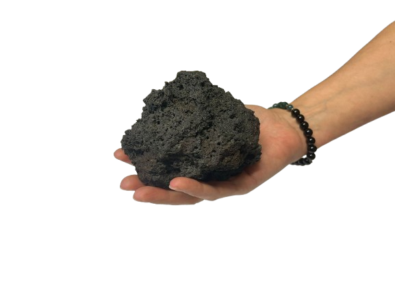
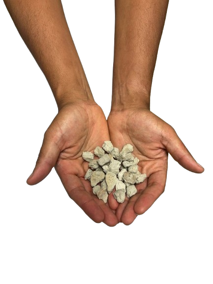
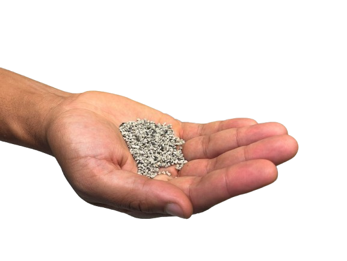

Partie 1 — Granulométrie, texture cristalline et texture vésiculaire
Consigne : Pour chaque échantillon présenté ci-dessous, décrivez la granulométrie ainsi que les textures cristalline et vésiculaire, en vous aidant du tableau ci-dessous et des indices à disposition.
|
Granulométrie
|
Texture cristalline
|
Texture vésiculaire
|
Non-applicable (massif)
Bombe (arrondi)/bloc(anguleux)
Lapilli
Cendre
|
Grenue
Porphyrique
Aphyrique ou microlitique
Vitreuse
Autre
|
Réticulite
Ponce
Scorie
|
Échantillon 1

Indice : Photo d’un échantillon prélevé sur un affleurement massif. La largeur du champ est de quelques centimètres.
Échantillon 2

Indice : Photo d’un échantillon prélevé sur un affleurement massif. La largeur du champ est de quelques centimètres.
Échantillon 3

Indice : Échantillon ramassé au sol. La densité du fragment paraît intermédiaire.
Échantillon 4

Indice : Échantillon récolté au sein d’un log stratigraphique proche d’un volcan. Les fragments paraissent très légers.
Échantillon 5

Indice : Échantillon récolté au sein d’un log stratigraphique à distance d’un volcan. Les fragments paraissent très légers.
Échantillon 6

Indice : Photo d’un échantillon prélevé sur un affleurement massif. La largeur du champ est de quelques centimètres.